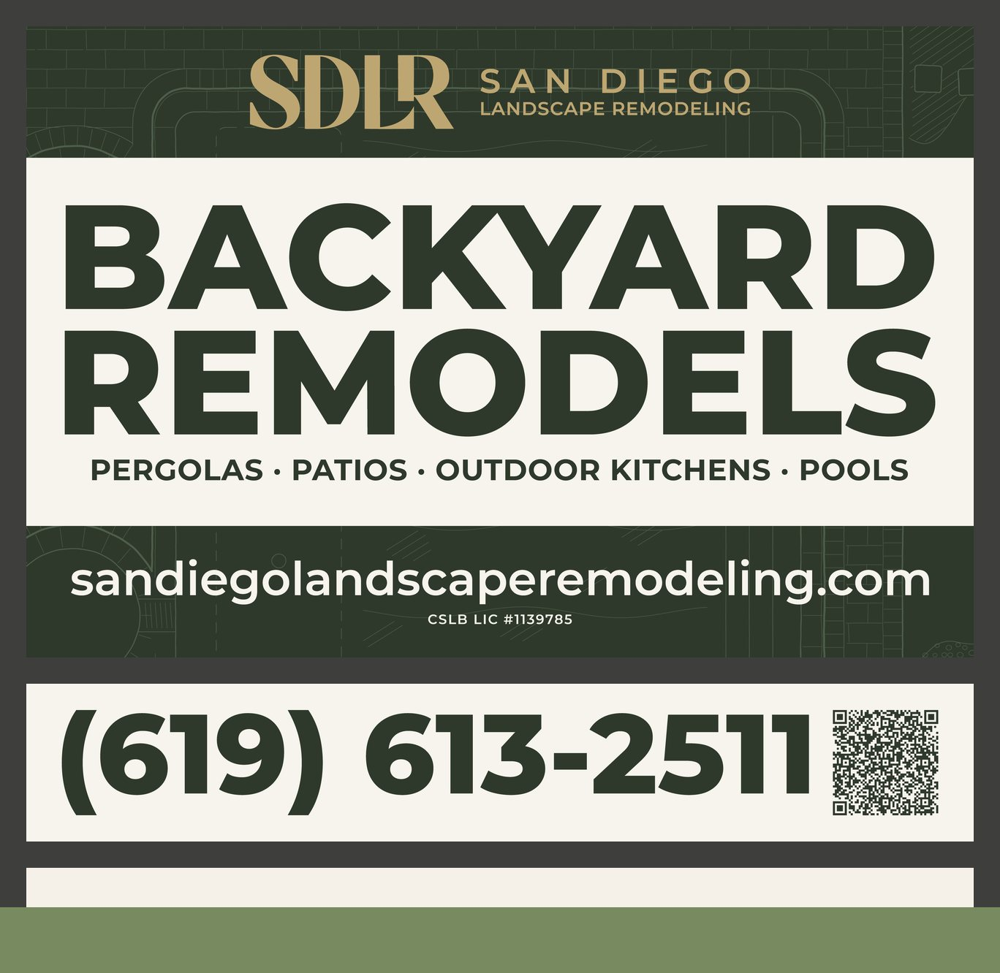
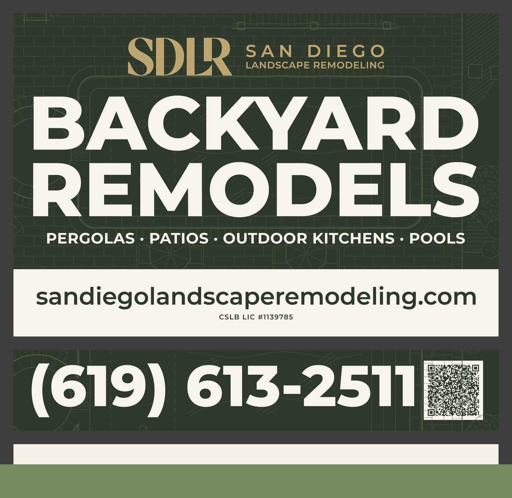
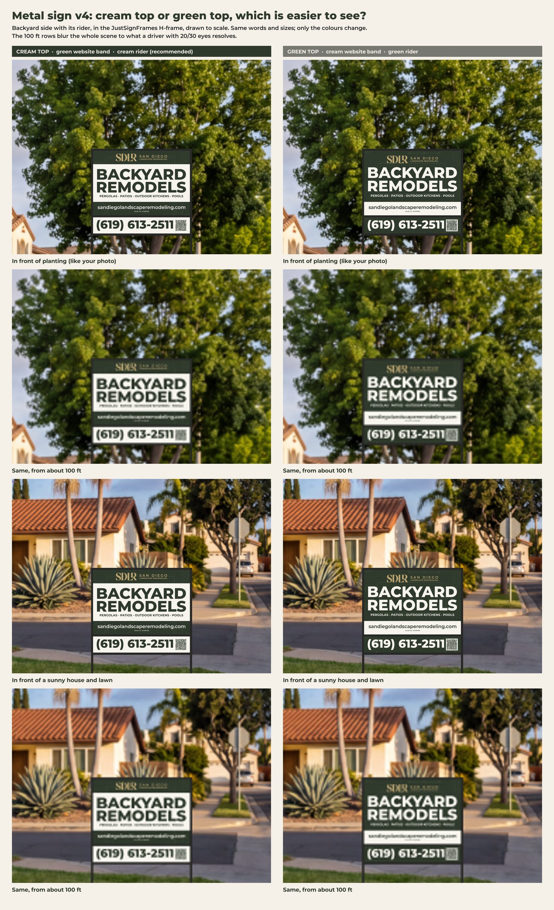

San Diego Landscape Remodeling · Metal yard sign · Version 4 · Final
A bigger website, and the QR moves to the rider
Gio asked to take the QR out of the website band, make the website bigger, and to compare a cream top with a green bottom and a cream rider. Both layouts are built. In both, the website runs nearly the full width of the band (1.24 in capitals, up from 0.98 in) and the QR sits on the rider next to the number.
ApprovedGio picked the cream top on November 24. Print the cream panel and the cream rider below. The green top stays in the file as the alternative. Not ordered.

Cream top · green website band · cream rider (recommended)

Green top · cream website band · green rider
Which is easier to see
In front of planting (like Gio's photo at the pepper tree), the cream top jumps out and the green top sinks into the leaves. Its letters still read, but the sign itself is easy to miss.
In front of a sunny house and lawn, both are easy to see. The green strips and the black frame keep the cream version outlined.
From about 100 ft, the headline and the number read in both. The website is for people slowing down or walking past at either size.
So the cream top is never the hard one to spot, and the green top sometimes is. Most of these signs will stand in planted yards.

Backyard side with its rider, drawn to scale in the H-frame, in front of a street tree and in front of a sunny house, close up and blurred to what 20/30 eyes see from about 100 ft.
What changed from Version 3
Website band: just the website and the CSLB licence. The website is 1.24 in tall and 32.6 in wide.
QR on the rider (4 in), still opening the Contact page to book a consultation, tagged metal-rider. It lives with the number because the rider is the “reach us” piece.
CALL OR TEXT is off the rider to make room for the QR. The number stays 2.99 in tall.
Same faces: BACKYARD REMODELS on one side, FRONT YARD REMODELS on the other.
Frame, print spec and prices are unchanged (Version 1). The layered Illustrator master (six artboards) and the README are in Drive under
02 Clients/san-diego-landscape-remodeling/assets/print-ready/yard-signs/2026-11-23-36x24-metal-rider/print-files-v4/. Versions 1–3 are kept.